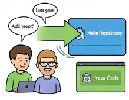
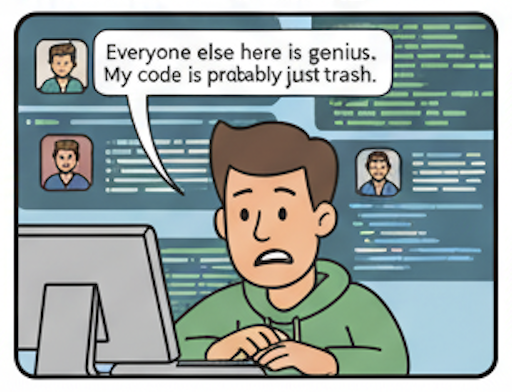

Diving into the World of
Open Source
By Rajani Karuturi
https://tinyurl.com/klh-os
About Me
- B.E.(Hons.) Computer Science
- Solution Consultant
- Committer and PMC Member, Apache CloudStack
-
Find me on
 GitHub
GitHub
 LinkedIn
LinkedIn
What is Open Source?
Software for which the original source code is made freely available and may be redistributed and modified.
An Analogy: The Recipe
Closed Source
A secret recipe. You can buy the cake, but you can't see how it's made or improve it.
Open Source
A recipe shared with everyone. You can use it, tweak it, and share your improved version.
Popular Open Source Projects We Use
- Operating Systems: Linux (Ubuntu, Fedora), Android
- Browsers: Mozilla Firefox, Chromium
- Development Tools: VS Code, Git, Docker
- Databases: PostgreSQL, MySQL
- Web Servers: Apache HTTP Server, Nginx
- Programming Languages: Python, Java, JavaScript, Go, Rust
- Frameworks: React, Angular, Vue.js, Spring, Django, Flask
- Cloud Native: Kubernetes, Prometheus, Grafana

source: https://xkcd.com/2347/
Open Source Licenses
What are Open Source Licenses?
- Legal documents granting usage, modification, and distribution rights.
- Ensure software remains "open" while protecting authors.
Permissive Licenses (e.g., MIT, Apache 2.0)
- Allow broad use, modification, distribution.
- Require attribution.
- Compatible with proprietary software.
Copyleft Licenses (e.g., GPLv3)
- Derivative works must use same license.
- Promote software freedom.
- More restrictive for proprietary integration.
Choosing a License
- Consider project goals and desired usage.
- Popular: MIT (simplicity), Apache 2.0 (patents), GPL (strong copyleft).
Why Contribute?
- Improve your coding skills
- Build your portfolio and resume
- Learn to collaborate with developers globally
- Give back to the community
- It's fun!
How to Get Started?
Learn the basics of git and GitHub
you can start with this video, if you don't know where to start
Finding Your First Bug
Many organizations have special labels for issues that are great for new contributors.
Factors to Consider
- Personal Interest: Pick a project you care about or use.
- Project Health: Active development, regular updates, responsive maintainers.
- Community: Welcoming, supportive, diverse contributors.
- Technology Stack: Familiarize with languages and frameworks.
The Contribution Workflow
It might seem daunting at first, but it's a straightforward process.

1. Fork the Repository
Create a personal copy of the project on your GitHub account.
2. Clone Your Fork
Download the repository to your local machine.
git clone https://github.com/your-username/project-name.git
3. Create a New Branch
Create a separate branch for your changes. This keeps your work organized.
git checkout -b my-awesome-feature
4. Make Your Changes
Fix the bug or implement the new feature.
5. Commit and Push
Save your changes and upload them to your fork on GitHub.
git add .
git commit -m "feat: Add my awesome feature"
git push origin my-awesome-feature
6. Create a Pull Request
Propose your changes to the original project. This opens a discussion with the project maintainers.
7. Review & merge
Mainteners review the code and merge.
8. Happy Developer
My code is live!
Testing Your Contributions
Why Tests are Crucial
- Ensure changes work as expected.
- Prevent regressions.
- Provide usage examples.
- Build maintainer confidence.
Types of Tests
- Unit Tests: Individual components.
- Integration Tests: System components working together.
- End-to-End Tests: Simulate user scenarios.
How to Approach Testing
- Follow existing test patterns.
- Write failing tests *before* code (TDD).
- Run full test suite.
Effective Communication in Open Source
Don't be afraid of feedback on your PRs. It's a learning process.
Clear and Concise Language
- Be specific; avoid jargon or explain it.
- Use proper grammar and spelling.
Respectful and Patient Interactions
- Maintainers are volunteers; be patient.
- Assume good intent; constructive criticism only.
Utilizing Communication Channels
- Issue Trackers: Bugs, features, specific tasks.
- Pull Request Comments: Feedback on code changes.
- Mailing Lists/Forums: Broader discussions, announcements.
- Chat (Slack/Discord): Real-time discussions, quick questions.
The Role of Maintainers
What Do Maintainers Do?
- Review code (Pull Requests).
- Guide project vision.
- Manage issues and features.
- Ensure code quality.
- Foster community.
Working with Maintainers
- Be responsive to PR feedback.
- Understand their responsibilities.
- Clearly explain changes.
- Be open to suggestions.
Beyond Code Contributions
Documentation
- Improve READMEs, wikis, and API documentation.
- Write tutorials or examples.
- Translate documentation into other languages.
Design and UI/UX
- Create logos, icons, or other visual assets.
- Suggest improvements to the user interface or experience.
- Help with front-end development.
Community Support
- Answer questions on forums, chat, or Stack Overflow.
- Help new contributors get started.
- Organize events or meetups.
Bug Triaging and Reporting
- Verify reported bugs.
- Reproduce issues and provide clear steps.
- Suggest potential solutions or workarounds.
Don't Suffer from Imposter Syndrome
Everyone was a beginner once. The open source community is generally very welcoming.
Live Demo
Let's find a good first issue and fix it using Gemini CLI.
- Choose an open-source project.
- Read through the open issues.
- Pick a "good first issue".
- Use Gemini CLI to understand the code and fix the issue.
Questions?
Thank You!
Now go forth and contribute!
Start your open source journey today!